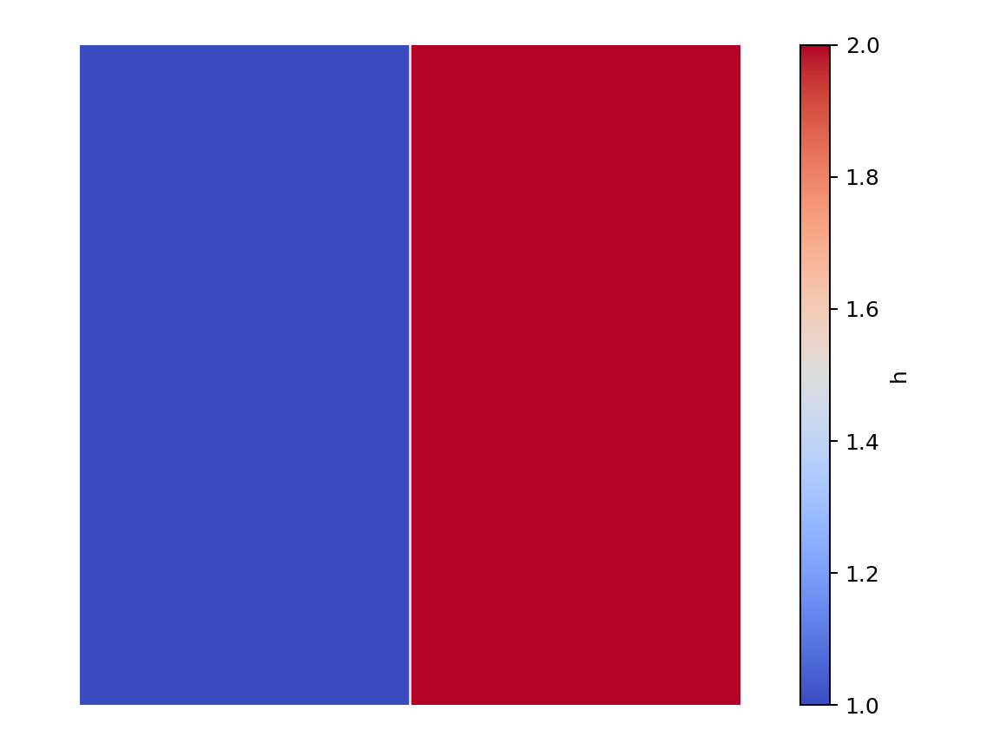
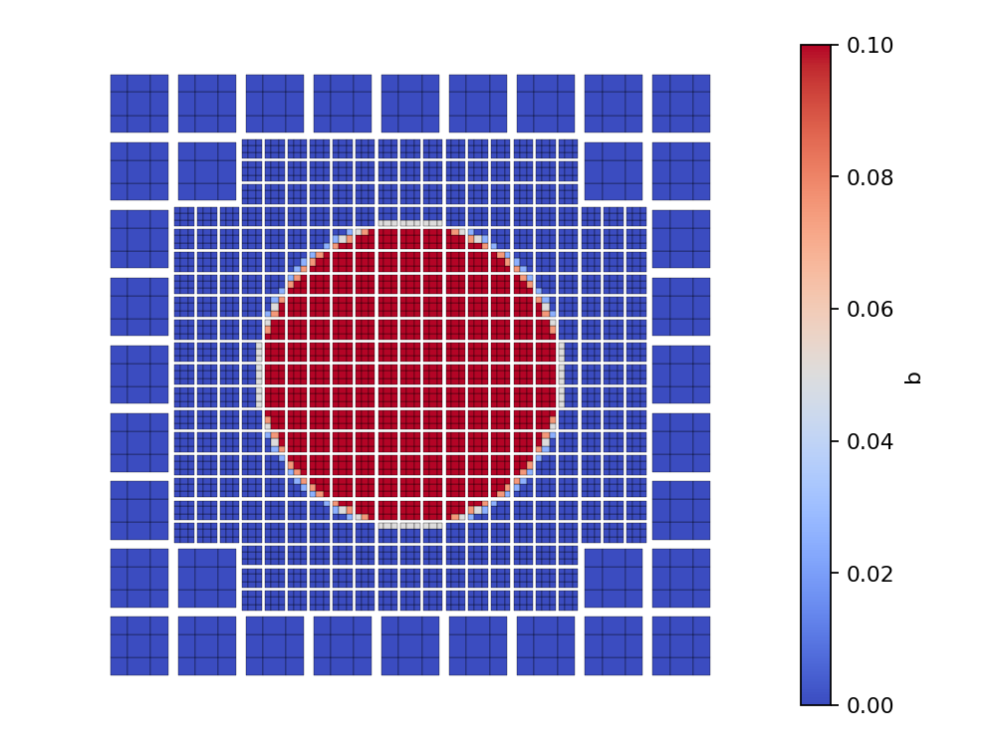

|
Peano
|
|
Peano
|
In Part 1 - The Acoustic Equations everything was handed to you. This time you** implement the physics. The notebook tutorials/02_shallow-water/ShallowWater.ipynb is ready to run, but the C++ file ADERDGSolver.cpp next to it contains only stubs marked TODO. Your task is to fill them in, rebuild and watch a dam break.
This tutorial adds two ingredients on top of Part 1: a non-conservative product (NCP) for the bathymetry term, and static mesh refinement driven by a refinement criterion.
The unknowns are the water height h, the momenta hu_1 and hu_2, and the bathymetry (sea-bed height) b. Without bathymetry:
\( \begin{equation*} \frac{\partial}{\partial t}\left( \begin{array}{l} h \\ h u_1 \\ h u_2 \\ b \end{array} \right) + \nabla \cdot \underbrace{\begin{pmatrix} h u_1 & h u_2 \\ h u_1^2 + \frac{g h^2}{2} & h u_1 u_2 \\ h u_2 u_1 & h u_2^2 + \frac{g h^2}{2} \\ 0 & 0 \end{pmatrix}}_{ flux } = \vec{0} \end{equation*} \)
with gravity \(g = 9.81\). The eigenvalues in normal direction \(n\) are \(u_n + \sqrt{g h}\), \(u_n\) and \(u_n - \sqrt{g h}\), so the maximum by magnitude is \(\max(|u_n + \sqrt{g h}|, |u_n - \sqrt{g h}|)\). Recall the base unknowns store the momentum hu, not the velocity, so \(u_n = hu_n / h\).
The notebook sets up a \(2 \times 2\) box with non-periodic boundaries (the flow runs into walls), an ADER-DG solver of order 3 named ADERDGSolver, and declares the PDE terms it will use:
aderdg_solver = exahype2.solvers.aderdg.GlobalAdaptiveTimeStep(
name = "ADERDGSolver",
order = 3,
time_step_relaxation = 0.9,
unknowns = {"h": 1, "hu": 2, "b": 1},
auxiliary_variables = {},
)
aderdg_solver.set_implementation(
flux = exahype2.solvers.PDETerms.User_Defined_Implementation,
ncp = exahype2.solvers.PDETerms.User_Defined_Implementation,
refinement_criterion = exahype2.solvers.PDETerms.User_Defined_Implementation,
max_eigenvalue = exahype2.solvers.PDETerms.User_Defined_Implementation,
)
The project builds even with the stubs in place, so run the build cell once, then work through the exercises and rebuild after each change.
Complete the TODOs in ADERDGSolver.cpp. The variables are addressed through the generated Shortcuts enum (Shortcuts::h, Shortcuts::hu + 0/1, Shortcuts::b).
initialCondition - water at rest ( \(hu = 0\)), flat bed ( \(b = 0\)) and a height step: \(h = 1\) on the left half ( \(x_0 < 0\)), \(h = 2\) on the right. The position is in cellCentre.boundaryConditions - a calm outside state: \(h = 1\), \(hu = 0\), \(b = 0\) in Qoutside.maxEigenvalue - return \(\max(|u_n + \sqrt{g h}|, |u_n - \sqrt{g h}|)\).flux - the flux above, keeping the \(\frac12 g h^2\) pressure term in the momentum component for now. Leave nonconservativeProduct zero.Rebuild and run. Exercise 1 has no refinement criterion yet, so this is a uniform grid**: Set -lmin and -lmax to the same level. We use level 4 - the dam break is a sharp step and this scheme has no limiter (that comes in Part 4), so it needs enough resolution to resolve the front; a coarser uniform level lets the time step collapse there. The run takes a few minutes; for a quick (but visibly coarser) first look, drop both levels to 3.
export OMP_NUM_THREADS=4 ./DamBreak -et 0.5 -ns 20 -lmin 4 -lmax 4
then visualise the water height:
from postprocessing import render_solution
render_solution.show_solution("ADERDGSolver", field="h")
The initial conditions should look like this:

A worked solution is given at Part 2 - Solution to Exercise 1.
With bathymetry the gravity term moves out of the flux and into the non-conservative product:
\( \begin{equation*} \frac{\partial}{\partial t}\left( \begin{array}{l} h \\ h u_1 \\ h u_2 \\ b \end{array} \right) + \nabla \cdot \underbrace{\begin{pmatrix} h u_1 & h u_2 \\ h u_1^2 & h u_1 u_2 \\ h u_2 u_1 & h u_2^2 \\ 0 & 0 \end{pmatrix}}_{ flux } + \underbrace{\begin{pmatrix} 0 & 0\\ g h\,\partial_x(h + b) & 0\\ 0 & g h\,\partial_y(h + b) \\ 0 & 0 \end{pmatrix}}_{ ncp } = \vec{0} \end{equation*} \)
flux - remove the \(\frac12 g h^2\) term you added in Exercise 1.nonconservativeProduct - implement \(B(Q)\,\nabla Q\). The gradient in the normal direction is supplied in deltaQ, so the momentum component is g * Q[Shortcuts::h] * (deltaQ[Shortcuts::h] + deltaQ[Shortcuts::b]).initialCondition - a radial setup: \(h = 1\) everywhere and a circular bump in the bed, \(b = 0.1\) within distance \(0.5\) of the origin (tarch::la::norm2(cellCentre)), else \(0\).refinementCriterion - return exahype2::RefinementCommand::Refine in a fixed disc over the bump (e.g. \(\|x\|_2 < 0.3\)), otherwise Keep. The criterion looks only at position, so the refined region is static - a fine patch over the bump, the coarse base everywhere else.Now that a refinement criterion is in place, -lmin and -lmax may differ. Run with a coarse level-2 base mesh that ExaHyPE refines to level 3 only inside the disc:
./DamBreak -et 0.5 -ns 20 -lmin 2 -lmax 3
The initial conditions should look like this:

A worked solution is given at Part 2 - Solution to Exercise 2. Once you are happy, continue with Part 3 - The Euler Equations over an Airfoil.